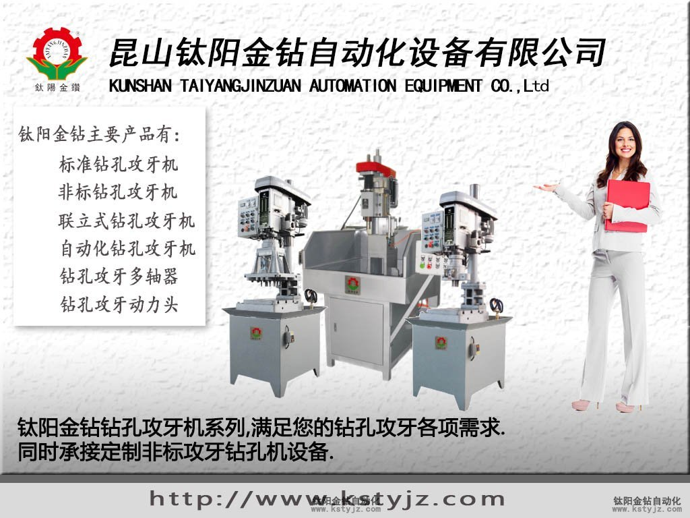
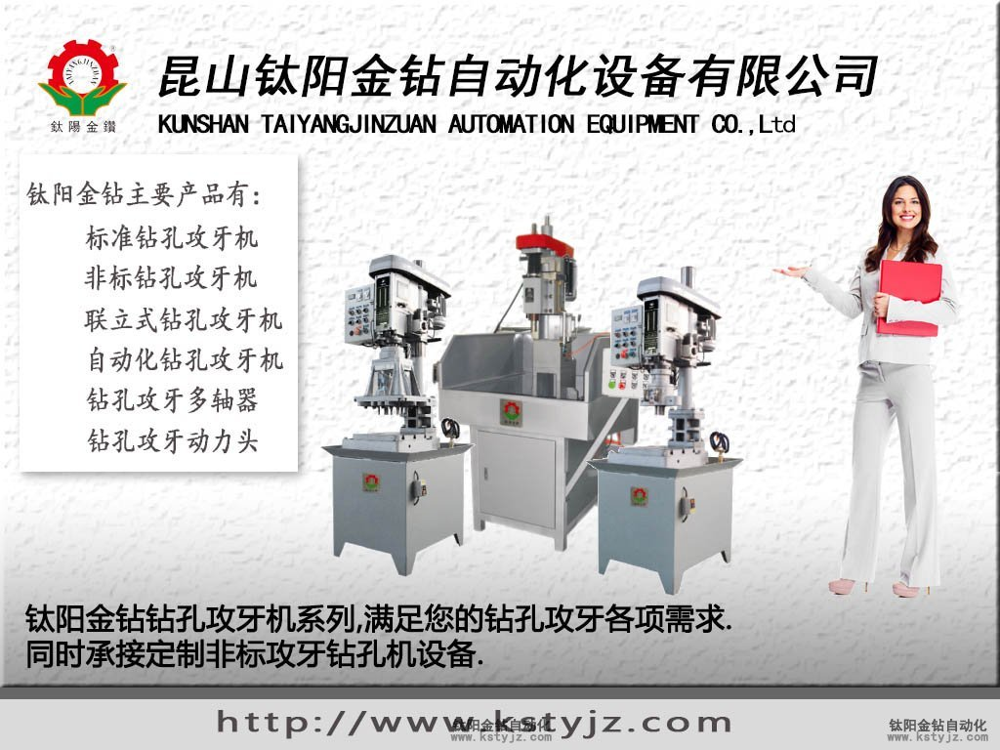

用進口絲攻深孔攻牙,你會嗎？---鈦陽金鑽
文章出處：鈦陽金鑽責任編輯：kstyjz人氣：發表時間：2015-03-31 11:34
用進口絲攻深孔攻牙,你會嗎？
文/鈦陽金鑽

在材料上做深孔攻牙是有一定難度的，進口絲攻的質量，絲攻的牙深，攻牙時候的排屑方式 都是要考慮的。文/鈦陽金鑽

第一要弄清楚什麼是深孔，為什麼它需要特殊的考慮。
一般我們對於深大於3倍孔徑的孔稱為深孔。
而深孔攻牙意味著攻牙深度大於絲錐直徑的1.5倍以上。如當用一隻直徑為4的進口絲錐攻牙深度為6MM″的螺紋時就是為深孔攻絲。
加工一個深孔螺紋，絲攻和零件需要長時間的接觸，加工過程中會產生更多的切削熱和更大的切削力，所以加長絲攻是我們不二的選擇。
所以，我們就有了解決方法：（1）增大下孔徑；（2）購買使用進口絲錐。�C
1.加大下孔徑
合適的下孔徑對於攻牙是十分重要的。一個尺寸稍大的螺紋底孔能有效降低攻絲過程中產生的切削熱和切削力國家標準和技術委員會規定：在深孔中，允許在孔壁上只攻出螺紋全高的50%。這一點在對特殊材料和難加工材料的小孔攻絲時尤其重要。因為儘管由於孔壁上螺紋高度的減少導致螺紋接觸率下降，但由於螺紋長度的增加，因此仍可保持螺紋可靠的連接。
螺紋底孔的直徑增量主要取決於所要求的螺紋接觸率和每英吋的螺紋頭數
2.切削參數
切削速度
由於鈦合金具有大的彈性和變形率，因此需要采有相對較小的切削速度。在加工鈦合金零件的小孔時，推薦採用的圓周切削速度為10∼14英吋/分。我們不推薦採用更小的速度，因為那樣會導致工件的冷作硬化。另外，也需注意螺旋絲錐破損而導致切削熱。�C
容屑槽�D
在深孔攻絲時，需減少絲錐槽數，使每個槽的容屑空間增大。這樣，當絲錐退刀時，可以帶走更多的鐵屑，減小由於鐵屑堵塞而造成刀具破損的機會。但另一方面，絲錐容屑槽的加大使得芯部直徑減小，因此，絲錐強度受到影響。所以這也會影響切削速度。另外，螺旋槽絲錐比直槽絲錐更易排屑。�C
前角和後角
小前角可提高切削刃強度，從而增加刀具壽命；而大前角有利於切削長切屑的金屬。因此在對鈦合金加工時，需綜合考慮這兩個方面的因素，選用合適的前角。�C
大後角可以減小刀具和切屑之間的摩擦。因此有時要求絲錐後角為40°。在加工鈦金屬時，在絲錐上磨出大的後角，有利於排屑。另外，全磨製絲錐和刃背鏟磨的絲錐也有利於攻絲。
冷卻液
當加工特殊材料時，必須保證切削液到達切削刃。為改進冷卻液的流量，推薦在絲錐的刃背上開冷卻槽。如果直徑足夠大的話，可考慮採用內冷卻絲錐。
昆山鈦陽金鑽金鑽自動化設備有限公司，熱忱歡迎您的惠顧！路皎 15250231221
上一篇：攻牙機常見的故障及其解決辦法---鈦陽金鑽 | 下一篇：攻牙機在攻絲過程中遇到的問題


推薦文章
- 影響電動攻牙機性能的
- 何以自動攻牙機可以做
- 攻螺紋前鑽底孔直徑和
- 鑽孔機如何選擇,台式自
- 攻牙油 百 科
- 自動鑽床自動攻牙機離
- SPS-全自動鑽孔倒角攻牙
- 攻牙機原理,多功能機床
- 動力頭基本構造及相關
- 自動攻牙機深孔。小孔